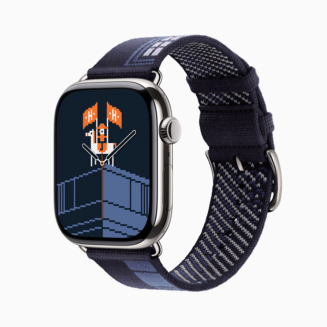

新闻稿把同系列针织表带与以巴黎旗舰店为背景的动画表盘配套展示。
下方的文件数包括本地化资源。固件名称键能确认包的归属；组件的圆屏点击边界、亮屏过渡与 AOD 对照均待设备验证。
原始包 已解析属性表 Mach-O 方法与成员 ARM64 汇编 解出的图集
.png × 6352 .strings × 88 .plist × 41 .car × 1 无扩展名 × 1
原始包 已解析属性表 Mach-O 方法与成员 ARM64 汇编 解出的图集
.png × 6352 .strings × 88 .plist × 41 .car × 1 无扩展名 × 1
原始包 已解析属性表 Mach-O 方法与成员 ARM64 汇编 解出的图集
.png × 6352 .strings × 88 .plist × 41 .car × 1 无扩展名 × 1
NTKHermes2025FaceBundle.bundleVO_DESCRIPTION_hermes-generic-dark-drumVO_DESCRIPTION_hermes-generic-dark-cuckoo-newtonVO_DESCRIPTION_hermes-timeofday-bike-jumpVO_DESCRIPTION_hermes-generic-light-sky-parachuteVO_DESCRIPTION_hermes-generic-dark-sky-parachuteVO_DESCRIPTION_hermes-generic-dark-wateringVO_DESCRIPTION_hermes-weather-rainyVO_DESCRIPTION_hermes-weather-frozenVO_DESCRIPTION_hermes-generic-light-cuckoo-newtonHERMES2025_FACE_DESCRIPTIONVO_DESCRIPTION_hermes-timeofday-sleepwalkingVO_DESCRIPTION_hermes-generic-light-drumVO_DESCRIPTION_hermes-device-light-low-powerVO_DESCRIPTION_hermes-geneirc-dark-houseworkVO_DESCRIPTION_hermes-generic-light-paint-bucketVO_DESCRIPTION_hermes-music-dark-boom-boxVO_DESCRIPTION_hermes-timeofday-breakfastVO_DESCRIPTION_hermes-timeofday-coffeeVO_DESCRIPTION_hermes-generic-dark-cuckoo-orange-boxVO_DESCRIPTION_hermes-device-dark-low-powerVO_DESCRIPTION_hermes-calendar-christmasVO_DESCRIPTION_hermes-generic-dark-cuckoo-horseVO_DESCRIPTION_hermes-health-dark-workoutVO_DESCRIPTION_hermes-generic-dark-trimming-treeVO_DESCRIPTION_hermes-generic-light-cuckoo-horseVO_DESCRIPTION_hermes-calendar-birthdayVO_DESCRIPTION_hermes-health-light-workoutVO_DESCRIPTION_hermes-generic-dark-doucheVO_DESCRIPTION_hermes-generic-light-trimming-treeVO_DESCRIPTION_hermes-generic-light-wateringVO_DESCRIPTION_hermes-generic-light-cuckoo-orange-boxVO_DESCRIPTION_hermes-weather-foggyVO_DESCRIPTION_hermes-timeofday-stargazingVO_DESCRIPTION_hermes-music-light-boom-boxVO_DESCRIPTION_hermes-generic-light-doucheVO_DESCRIPTION_hermes-focus-counting-sheepVO_DESCRIPTION_hermes-generic-light-houseworkVO_DESCRIPTION_hermes-generic-dark-paint-bucket色组与设备条件 共享色组与默认值
-[_TtC23NTKHermes2025FaceBundle18Hermes2025FaceView tritium_didTransitionToTritiumOn];-[_TtC23NTKHermes2025FaceBundle18Hermes2025FaceView tritium_prepareForTransitionToTritiumOnAnimated:withCompletion:];-[_TtC23NTKHermes2025FaceBundle18Hermes2025FaceView tritium_didTransitionToTritiumOff];-[_TtC23NTKHermes2025FaceBundle18Hermes2025FaceView tritium_transitionToTritiumOnWithProgress:];-[_TtC23NTKHermes2025FaceBundle18Hermes2025FaceView tritium_createFaceAnimator];-[_TtC23NTKHermes2025FaceBundle18Hermes2025FaceView tritium_alwaysOnTimelines];-[_TtC23NTKHermes2025FaceBundle18Hermes2025FaceView tritium_transitionToTritiumOffWithProgress:];-[_TtC23NTKHermes2025FaceBundle18Hermes2025FaceView tritium_timeViews];-[_TtC23NTKHermes2025FaceBundleP33_3BE4DC2389ADC7FA9FFF0F172E0E43A419LowPowerModeMonitor powerStateDidChange];-[_TtC23NTKHermes2025FaceBundle14SpriteAnimator init];-[_TtC23NTKHermes2025FaceBundle14SpriteAnimator dealloc];-[_TtC23NTKHermes2025FaceBundle14SpriteAnimator displayLinkFired];-[_TtC23NTKHermes2025FaceBundle18Hermes2025FaceView tritium_didTransitionToTritiumOn];-[_TtC23NTKHermes2025FaceBundle18Hermes2025FaceView tritium_prepareForTransitionToTritiumOnAnimated:withCompletion:];-[_TtC23NTKHermes2025FaceBundle18Hermes2025FaceView tritium_didTransitionToTritiumOff];-[_TtC23NTKHermes2025FaceBundle18Hermes2025FaceView tritium_transitionToTritiumOnWithProgress:];-[_TtC23NTKHermes2025FaceBundle18Hermes2025FaceView tritium_createFaceAnimator];-[_TtC23NTKHermes2025FaceBundle18Hermes2025FaceView tritium_alwaysOnTimelines];-[_TtC23NTKHermes2025FaceBundle18Hermes2025FaceView tritium_transitionToTritiumOffWithProgress:];-[_TtC23NTKHermes2025FaceBundle18Hermes2025FaceView screenWillTurnOnAnimated:];-[_TtC23NTKHermes2025FaceBundle18Hermes2025FaceView setOverrideDate:duration:];-[_TtC23NTKHermes2025FaceBundle18Hermes2025FaceView screenDidTurnOffAnimated:];-[_TtC23NTKHermes2025FaceBundle19Hermes2025HandsView createMinuteHandView];-[_TtC23NTKHermes2025FaceBundle19Hermes2025HandsView createSecondHandView];-[_TtC23NTKHermes2025FaceBundle10SpriteView layoutSubviews];-[_TtC23NTKHermes2025FaceBundle14Hermes2025Face curatedGalleryBackgroundColors];-[_TtC23NTKHermes2025FaceBundle18Hermes2025FaceView _homeScreenDateLabelColor];-[_TtC23NTKHermes2025FaceBundle18Hermes2025FaceView _homeScreenBackgroundColor];